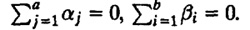
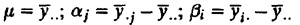
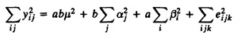
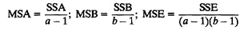
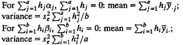

|
Box 21.1 Analysis of Two-Factor Designs without Replications
- 1. Model: yij = µ + αj + βi + eij; the effects are computed so that
- 
- 2. Effects: 
- 3. Allocation of variation: SSE can be calculated after computing other terms below:

SSY = SS0 + SSA + SSB + SSE
- 4. Degrees of freedom:
SSY = SS0 + SSA + SSB + SSE
ab = 1 + (a - 1) + (b - 1) + (a - 1)(b - 1)
- 5. Mean squares:

- 6. Analysis of variance:
- MSA/MSE should be greater than F[1-α;a-1,(a-1)(b-1)].
- MSB/MSE should be greater than F[1-α;b-1,(a-1)(b-1)].
- 7. Standard deviation of effects: s2µ = s2e/ab;
s2αj = s2e(a -1)/ab;s2βi = s2e(b - 1)/ab
- 8. Contrasts:

- 9. All confidence intervals are calculated using t[1-α/2;(a-1)(b-1)].
- 10. Model assumptions:
- (a) Errors are IID normal variates with zero mean.
- (b) Errors have the same variance for all factor levels.
- (c) The effects of various factors and errors are additive.
- 11. Visual tests:
- (a) The scatter plot of errors versus predicted responses should not have any trend.
- (b) The normal quantile-quantile plot of errors should be linear.
If any test fails or if the ratio ymax/ymin is large, multiplicative models or transformations should be investigated.
|
){kind=link}
){kind=link}